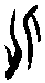
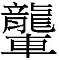

28 大過卦 澤風大過
大過，棟橈。利有攸往，亨。初六，藉用白茅，无咎。九二，枯楊生稊，老夫得其女妻，无不利。九三，棟橈，凶。九四，棟隆，吉，有它吝。九五，枯楊生華，老婦得其士夫，无咎无譽。上六，過涉滅頂，凶，无咎。
【卦名】
今本：大過 帛書：泰過 歸藏：大過 秦簡：大過 清華簡： 海昏：大過
過為度過、經過、超過、越過，錯過、過錯的過。就字面來說，大過即太超過，或過錯很大的意思。
《說文》：「過，度也。」段注：「引伸為有過之過。《釋言》：郵，過也。謂郵亭是人所過。愆郵是人之過。皆是。」依段注，《說文》所謂的度，為經過、通過的意思。但引申也有過錯之義。
《爾雅》：「郵，過也。」「逸，諐，過也。」《說文》：「郵，境上行書舍也。」段注：「按：經過與過失，古不分平去。故經過曰郵，過失亦曰郵。」《爾雅》以郵解釋過，依《說文》段注，郵有經過和過錯二義。至於《爾雅》所說的逸解釋為過失，諐為愆，因此過即過失、罪過之義。
大過帛書做泰過，義同大過。馬國翰輯本《歸藏》以及王家台秦簡皆作大過。清華簡作，李學勤認為為「過」的異體字。但也可能是化的繁化，清華簡中有許多類似的例子，例如旅卦的旅，歸妹的歸，都加了辶字邊。甚至現今的「復」（古文彳同辶）也是由复繁化而來。因此可解讀為化。
化通訛，過錯、差錯的意思。《爾雅．釋言》：「訛，化也。」《總要》：「化音吪，差錯也，謬言也。从人匕，會意。小篆與匕混，故加言作訛。」此與過錯的過義同。
化亦有教化義。《說文》：「教行也，从匕从人。」段注：「教行於上，則化成於下。」《增韻》：「凡以道業誨人謂之敎。躬行于上，風動于下，謂之化。」大過卦象下為巽風，風行於下之義。上下呈鏡射，亦頗符合《說文》所說的「化」的意思。
化也有變化的意思，甲骨文作，劉興隆《新編甲骨文字典》：「象一人上下翻騰，以示變化。」
總觀《周易》經文，大過卦卦爻辭只有「過涉滅頂」一過字，為越過之義。而小過卦「過其祖，遇其妣」、「弗過遇之」，「弗遇過之」的過字都和遇字對舉，可解釋為越過、經過、錯過。而大過及小過的卦義則有過份，或者是過錯的意思。
【卦義】
陽過，陽氣過盛。棟樑不穩，組織虛胖。
大過就字面意義來說是太超過，大的過錯。就易理來說，為陽氣太過，鄭玄說的「陽爻過也」。
相對於小過的陰氣過盛。
《周易》以陽為實為大，陰為虛為小。小過為陰虛過盛，負面之事太多，因此必需不厭其繁地一一面對解決，因此小過《象傳》說「行過乎恭，喪過乎哀，用過乎儉」。大過則是陽實過度，過猶不及，導致架構的大破壞。這也是《彖傳》所說的：「大過，大者過也。棟橈，本末弱也。」
卦象上澤兌，下巽木，巽木在澤中，兌為毀折，故為澤滅木之象。原本巽卦為風為木，有救濟兌、坎等水險的效用，如渙卦及中孚卦，都因巽卦而利涉大川。但大過卦則濟險不成，巽木反而沉於水而滅頂，有如君子殺身成仁。
六十四卦中有四個陽爻者相當多，但為何獨此卦為「大過」？主要為四個陽爻聚集於中央，而上下分別為一個陰爻，呈現本（下爻）末（上爻）羸弱，無法承受四陽的樣子。另一可能，大過卦為乾坤兩卦的陰陽爻上交下交的結果。乾卦上九及初九分別過去坤體成小過卦的九三與九四。陽爻跑過去坤體，因此名大過。而小過卦則是坤體中六三與六四兩陰爻跑到乾體成大過卦的上六與初六，陰爻過去乾體，因此名小過。
《繫辭》：「古之葬者，厚衣之以薪，葬之中野，不封不樹，喪期无數，後世聖人易之以棺槨，蓋取諸大過。」這是從取象來說大過的卦義。上古將大過取象為棺槨，因此大過卦又有死亡的凶險，上六說的「過涉滅頂」。
《序卦傳》：「頤者養也。不養則不可動，故受之以大過。」大過為頤養太過，而使陽氣過剩，以至於本末不均而孱弱。《雜卦》說「大過，顛也」，顛為顛倒的意思。於人的養生來說，為頤養過度，有如人過於養尊處優而呈虛胖於內，身體疾病叢生；於公司則是人事老化，主管過多，有將無兵，大頭症嚴重，開始問題百出。
《彖傳》說「棟橈」，棟為屋子最重要的脊樑骨，彎曲了，則屋宇不穩而動搖，有傾倒的危險。棟橈影響的是房子的結構問題，因此大過象徵的是屬於架構性、結構性，方向性的過錯，這類過錯是屬於陽性；顯性，容易看出的大型錯誤。相較之下小過之為陰性過錯，為隱藏的、瑣碎的、細節的，難以發現的過錯，俗彥所謂「魔鬼藏在細節裡」等一類的過錯。
吉凶論斷上，既然棟樑不穩，澤滅木，都可見大過是一個凶卦。卦辭中之所以講「利有攸往，亨」，是指宜於離去以避險。所謂利有攸往，因為方向錯誤，所以宜於重新調整方向。或者基本結構錯誤，所以宜於重新開始。
王弼：「大過者，棟橈之世也。本末皆弱，棟已橈矣。而守其常，則是危而弗扶，凶之道也。以陽居陰，拯弱之義也，故陽爻皆以居陰位為美。濟衰救危，唯在同好，則所贍褊矣。九四有應，則有它吝；九二无應，則无不利也。」
就六爻來說，大過有陽氣過盛之過，因此其吉象在於剛強的陽爻得到陰柔的調和，最符合此條件者為二、四兩爻。兩爻除陽居陰位外，又分別與初六比應或相應，因此為吉。反觀九五與九三，陽居陽位，又得不到陰爻的調和，如九五又為上六所乘，因此兩爻分別說無譽、凶。最凶險者之所以為上六，因為陰本柔弱而無以救濟棟橈之勢，又不知量力而凌架四陽之上，行事極端，因此過涉滅頂。
經文中的巽木則有三種取象。一是水澤邊的樹被水澤所滅，為枯楊。二是巽為長木，即棟樑。棟樑為兌所傷而橈，即棟橈。枯陽需要生機，天施地生，陽主施與，陰主生長，九二和九五能得陰氣之助者則有生機，此九二生稊而无不利，九五生華而不可久的差別。而九三與九四之棟橈與棟隆，差別也是在於是否可得陰氣之助。第三種取象為舟楫，舟楫為澤水所滅，為沉船滅頂之象，因此上六曰過涉滅頂。
大過，棟橈。利有攸往，亨。
- 彖曰：大過，大者過也。棟橈，本末弱也。剛過而中，巽而說行，利有攸往，乃亨，大過之時大矣哉。
- 象曰：澤滅木，大過。君子以獨立不懼，遯世无悶。
- 《繫辭》：古之葬者，厚衣之以薪，葬之中野，不封不樹，喪期无數，後世聖人易之以棺槨，蓋取諸大過。
【今解】
大的過錯，屋脊棟樑彎曲不正。宜有所往，亨通。
象曰：「君子以獨立不懼，遯世無悶。」處大過之時，君子獨立而行，無所恐懼，逃離世間而無所怨懟。
棟樑彎曲，屋子將倒，另找安身之處則能亨通。君子當另求去處，或者隱退山林，不當留在原處，所以「利有攸往」。
棟橈為屋宇架構出了問題。二體下卦巽為宮室之象，也是長木大柱之象，上兌毀之，則宮室毀損，砥柱彎曲，屋宇不宜居住。故利有所往，不宜居留。
本末分別指初與上。王弼：「初為本，而上為末也。」
孔穎達：過謂過越之過，非經過之過。此衰難之世，唯陽爻乃大，能過越常理以拯患難也。故曰大過。以人事言之，猶若聖人過越常理以拯患難也。
朱熹：大，陽也。四陽居中過盛，故為大過。上下二陰，不勝其重，故有棟橈之象。又以四陽雖過，而二五得中，內巽外說，有可行之道，故利有所往而得亨也。
《繫辭》意思為：古時候在埋葬亡者時，就蓋上厚厚的薪柴當壽衣，埋葬在曠野之中，不加封土，不植樹，喪期沒有個數度法制。後代的聖人加以改革，就有了棺槨，這是取法於大過卦。
【字義】
棟橈：屋脊棟樑彎曲不正，則整棟房子不穩固。橈，音「饒」，彎曲不正。帛書作 ，通隆。今本九三「棟橈」與九四「棟隆」帛書分別作「棟橈」及「棟」，依帛書，卦辭當作：「大過，棟隆，利有攸往，亨。」但《彖傳》「棟橈，本末弱也」，與今本文義一致，因此應該從今本。棟，屋脊、棟樑。何楷：「棟《說文》謂之極，《爾雅》謂之桴，其義皆訓中也，即屋之脊檁。」虞翻：「大壯五之三，或兌三之五。棟橈謂三。巽為長木，稱棟。初上陰柔，本末弱，故棟橈也。」向秀：「棟橈則屋壞，主弱則國荒。所以橈，由於初上兩陰爻也。初為善始，末是令終。始終皆弱，所以棟橈。」侯果：「本，君也。末，臣也。君臣俱弱，棟橈者也。」
利有攸往：利於有所往。言應該離開，不當留在原處。虞翻：「謂二也。剛過而中，失位无應，利變應五；之外稱往，故利有攸往，乃亨也。」
澤滅木：大過為澤滅木之象，具體而言，經文的木取三種象。一是楊樹，因楊樹為澤邊之木，為澤所滅故二、五曰「枯楊」。二是棟。因巽為長木，又為宮室，上兌為毀折，棟橈之象。卦辭及九三、九四皆曰棟。三是舟楫之象，為澤所滅則舟楫不行，此上六之過涉滅頂。
獨立不懼，遯世无悶：獨立而無所恐懼，隱於世俗而無所怨懟。悶，怨懟。朱震：「巽見震伏，震為恐懼，獨立而不懼也。」
初六，藉用白茅，无咎。
象曰：藉用白茅，柔在下也。
《繫辭》：初六「藉用白茅，无咎」。子曰：「苟錯諸地而可矣。藉之用茅，何咎之有。慎之至也。夫茅之為物薄而用可重也，慎斯術也以往，其无所失矣。」
【今解】
敬獻時使用白茅，慎重其事，沒有罪咎。
正處棟橈即將屋毀的時候，所以謹慎正可以保得平安。
大過所謂的本末弱分別指初六和上六。初六以柔處剛，不當位，又處棟橈之時，原本應是有罪咎，能夠無咎是因為能夠承陽（為順），上又與九四相應，屬於能夠隨剛而與剛互濟者，故得無咎。
《繫辭傳》孔子解釋這一爻說：「苟錯諸地而可矣。藉之用茅，何咎之有？慎之至也。夫茅之為物薄而用可重也，慎斯術也以往，其无所失矣。」白茅為祭祀時用以包覆或置放祭品之用，表示慎重其事。孔子意思為，原本隨便放在地上就可以了，薦禮使用白茅，怎麼會有罪咎？白茅是很輕而卑微的東西，但是它的應用卻可以是很慎重的。以如此小心謹慎的方式前往，就不會有過失。
【字義】
藉用白茅：有多種解釋，但無論那一種解釋都比喻為慎重其事。其一，以藉為「草墊」，謂以白茅當作草墊使用。主要是在祭祀時置放敬獻之物，避免直接放在地上，以此表示慎重。馬融：「在下曰藉。」虞翻：「位在下稱藉，巽柔白為茅，故藉用白茅。」二是以藉為薦，取敬獻之意，謂敬獻之物以白茅做為包覆，白茅為潔白純潔之物，以白茅包覆代表慎重其事。來知德：「藉者薦也，承薦其物也。」 三是以藉為祭，謂在祭祀中使用白茅，一樣是意謂慎重其事。
九二，枯楊生稊，老夫得其女妻，无不利。
象曰：老夫女妻，過以相與也。
【今解】
枯萎的楊樹發了芽，生機重現，猶如人老了年過婚齡還得到年輕的妻子，無往不利。
大過之為凶，在於陽剛過盛，棟樑彎曲，房子結構不穩，澤滅木。大過之為亨為得陰之相濟，則陰陽調和。天施地生，坤陰氣主生，大過卦能得陰氣之助的陽爻，則可獲生機。九二與九五都與陰爻相比鄰，是能得陰氣者，所以兩爻都有得妻之象。但九二為無不利，九五為無咎無譽，何故？因為九二與初六比應，其得妻有如楊木往下生根（陰爻在下），九五與上六近而相逆，有如楊木向上開花（陰爻在上）。枯樹生根發芽是重現生機，開花則是迴光返照，準備在結束生命之前繁衍後代，不但無濟於樹木的枯萎，反而加速死亡。
其次，九二為初六所承載，為陰以濟陽，妻幫夫之象，故為吉。九五則是為上六所駕御，柔乘剛，陰傷陽，妻剋夫之象，所以說是老婦得士夫，無咎無譽。
【字義】
稊：有三解，一是花，二是幼芽，三是樹根。王弼：「稊者，楊之秀也」。《釋文》：「枯楊如字，鄭音姑。稊，徒稽反。楊之秀也，鄭作荑，音夷。」秀即花，但此解與九五枯楊生華於語意重覆，且同樣生花，吉凶殊異，於義不通。虞翻：「稊，穉也。楊葉未舒稱稊。」鄭玄作「枯楊生荑」，注曰：「木更生。」此皆以稊為幼芽，枯楊生稊即枯掉的楊樹發芽。發芽為重現生機，相對於九五開花為死前迴光返照。至宋明儒則開始解釋為根，程頤：「稊，根也。」朱熹：「梯，根也，榮於下者也，榮於下，則生於上矣。」就字義來說，鄭玄與虞翻語意較為正確，於義理亦切合大過卦義及卦爻辭義理，最值得採用。但宋儒所言，於義理亦通，且又符合陰在下承陽的卦象，因此生根之義也可做為補充，只是稊字並無根的意思。
過以相與：過，指老夫配女妻乃超乎平常的配對。相與，就文義來說，指相互幫助。就卦象來說，陰陽相應。此指九二與初六比應。程頤：「老夫之說少女，少女之順老夫，其相與過於常分，謂九二初六陰陽相與之和，過於常也。」孔穎達：「不云枯楊生稊者，枯楊則是老夫也，生稊則女妻也。其意相似，故《象》略而不言。」
九三，棟橈，凶。
象曰：棟橈之凶，不可以有輔也。
【今解】
棟樑彎曲不正，凶。
巽為長木，為棟樑。兌為毀折，九三處巽木之上，上兌之下，為兌所傷。為棟橈。
大過卦的九二及九五以枯楊取象，九二在下生根而發芽（初六為根）為吉，九五在上生花為無譽。而九三與九四兩爻則以棟取象。九三為巽木之上，上兌之下，為兌所毀，為棟橈，凶。而九四則處上卦之下，在巽木之上，為棟隆，吉。九三雖與上六相應，上六是讓楊樹生命加速枯萎的楊花，再加上上六本身即有滅頂之災，無以濟其陽剛，兩者雖相應，但反而為凶。而九四則與初六相應，初六為讓枯楊重現生機的樹根，為能夠濟陽者，因此為吉。
象曰：「棟橈之凶，不可以有輔也。」棟橈之所以為凶，是因為無法有輔助、支撐的力量。
九四，棟隆，吉，有它吝。
象曰：棟隆之吉，不橈乎下也。
【今解】
棟樑穩固，吉，但會有意外而悔恨。
此爻之所以為吉請見九三爻的說明。九四之吉，在於與初六相應，得陰之助。雖然吉，但應慎防意外發生而造成悔恨。
九三棟橈《象》曰「不可以有輔」，九四之棟隆《象》曰：「不橈乎下」，言下不彎曲動搖，此亦為有輔之義。
【字義】
有它吝：會發生意外而造成悔恨。有它，意外。它為蛇，古時人怕蛇，出門有意外則説「有它」，彼此問好則說「無它」。《說文》：「它，虫也。从虫而長，象冤曲垂尾形。上古艸居患它，故相問無它乎。凡它之屬皆从它。」或讀作「有它，吝」，言居住的屋子雖然棟樑穩固了，但裡面有蛇，因此而有吝。
隆：厚重、隆盛，引申為穩固。
九五，枯楊生華，老婦得其士夫，无咎无譽。
象曰：枯楊生華，何可久也；老婦士夫，亦可醜也。
【今解】
枯萎的楊樹開花，老婦人嫁給年輕力壯的丈夫，雖沒罪咎，但也沒什麼好名聲。
枯樹發芽代表已經長出新根，是重生現象，但若是開花則是死亡前的迴光反照，所以枯楊開花並不是吉利的事，不可被美麗的花所欺騙。而老婦再嫁給少男，不被風俗民情所容，所以應防名譽掃地。
九五與九二同以枯楊取象，兩者吉凶差異請見九二爻辭釋義。《象》曰：「枯楊生華，何可久也？老婦士夫，亦可醜也。」枯萎的楊樹開花無法長久；老婦得到年輕力壯的丈夫，讓人感到羞恥。
程頤：枯楊不生根而生華，旋復枯矣，安能久乎。老婦而得士夫，豈能成生育之功，亦為可醜也。
【字義】
士夫：年輕力壯的丈夫。孔穎達：「婦當少稚於夫，今年老之婦，而得彊壯士夫，亦可醜辱也。」
上六，過涉滅頂，凶，无咎。
象曰：過涉之凶，不可咎也。
【今解】
明知水深危險而仍強力涉水，以至慘遭滅頂，凶。
明知危險而仍然要勇往直前，慘遭滅頂，為壯烈成仁，殺身取義之象。雖凶險萬分，有滅頂死亡的危險，但因不論個人利害，義之所當為而為，是很令人敬佩的烈士，所以說沒有罪咎。
上六居於大過之上，陰柔者本無力救濟大過棟橈之勢，又不知量力而為，凌架四陽之上，行事極端，因此過涉滅頂。
大過為澤滅木之象，巽為舟楫，因此有沉船舟楫不可用之象。《繫辭》：「其上易知，本末也。初辭擬之，卒成之終。」上爻可代表一卦之發展結果，大過之滅木而舟楫不可行，可從上爻得知。
【字義】
過涉滅頂：積極涉水而慘遭滅頂。過涉，「過」即大過之過，指涉水過於積極；或者過河，越過之義。涉水，為徒手渡水，不依靠舟船等工具。滅頂，水超過頭頂，則淹沒而死。
【彖傳注】
大過，大者過也。棟橈，本末弱也。剛過而中，巽而說行，利有攸往，乃亨，大過之時大矣哉。
大者過也：解釋大過義。鄭玄：「陽爻過也。」大為陽，大者過即陽者過。過，過錯。
棟橈，本末弱也：棟樑彎曲，是因為本末羸弱。王弼：「初為本而上為末也。」向秀：「初為善始，末是令終。始終皆弱，所以棟橈。」本為下六，末為上六。陰者弱。巽為大木、宮室，兌為毀折，大過為大木、宮室毀壞之象，故曰棟橈。《釋文》：「弱本亦作溺。」
剛過而中：所指是九二還是九五，未詳。虞翻認為是九二。個人竊疑，彖傳中另有一種陰陽交換模式，一次兩個爻，一爻在上卦，一爻在下卦。下爻當位則上爻不當位，下爻不當位則上爻不當位。相較之下，既濟定旁通模式所交換的兩爻一定都是不當位的，而未濟定路徑所交換的爻一定都是當位的。例如，大過卦是乾卦初、上兩爻和坤卦四、三兩爻交換而得。乾初到坤四，乾上至坤三，成小過。坤三至乾上，坤四至乾初，成大過。剛過而中，指的可能是乾卦初上兩爻越過到坤卦卦體之中，大象呈坎。而小過指的則是兩個陰爻過去乾體。彖傳與易經多有以六爻為一個大象的例子。像鼎卦，小過卦。
巽而說行，利有攸往，乃亨：以上下二體卦德解釋經文「利有攸往，亨」。大過下卦為巽遜，上卦為兌說，巽而說行之象。以巽遜而喜悅之態，則宜有所往，並得亨通。